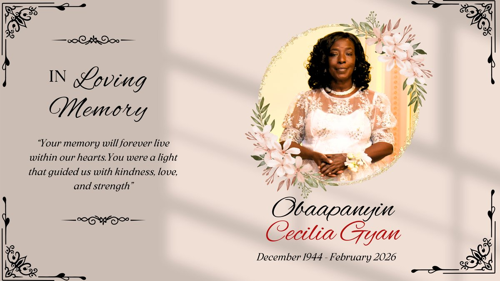

"Your memory will forever live within our hearts.
You were a light that guided us with kindness, love, and strength."
For we believe that Jesus died and rose again, and so we believe that God will bring with Jesus those who have fallen asleep in him. According to the Lord's word, we tell you that we who are still alive, who are left until the coming of the Lord, will certainly not precede those who have fallen asleep. For the Lord himself will come down from heaven, with a loud command, with the voice of the archangel and with the trumpet call of God, and the dead in Christ will rise first. After that, we who are still alive and are left will be caught up together with them in the clouds to meet the Lord in the air. And so we will be with the Lord forever.
For if we believe that Jesus died and rose again, even so them also which sleep in Jesus will God bring with him. For this we say unto you by the word of the Lord, that we which are alive and remain unto the coming of the Lord shall not prevent them which are asleep. For the Lord himself shall descend from heaven with a shout, with the voice of the archangel, and with the trump of God: and the dead in Christ shall rise first: Then we which are alive and remain shall be caught up together with them in the clouds, to meet the Lord in the air: and so shall we ever be with the Lord.
For since we believe that Jesus died and was raised to life again, we also believe that when Jesus returns, God will bring back with him the believers who have died. We tell you this directly from the Lord: We who are still living when the Lord returns will not meet him ahead of those who have died. For the Lord himself will come down from heaven with a commanding shout, with the voice of the archangel, and with the trumpet call of God. First, the believers who have died will rise from their graves. Then, together with them, we who are still alive and remain on the earth will be caught up in the clouds to meet the Lord in the air. Then we will be with the Lord forever.
Then I saw "a new heaven and a new earth," for the first heaven and the first earth had passed away, and there was no longer any sea. I saw the Holy City, the new Jerusalem, coming down out of heaven from God, prepared as a bride beautifully dressed for her husband. And I heard a loud voice from the throne saying, "Look! God's dwelling place is now among the people, and he will dwell with them. They will be his people, and God himself will be with them and be their God. He will wipe every tear from their eyes. There will be no more death or mourning or crying or pain, for the old order of things has passed away." He who was seated on the throne said, "I am making everything new!"
And I saw a new heaven and a new earth: for the first heaven and the first earth were passed away; and there was no more sea. And I John saw the holy city, new Jerusalem, coming down from God out of heaven, prepared as a bride adorned for her husband. And I heard a great voice out of heaven saying, Behold, the tabernacle of God is with men, and he will dwell with them, and they shall be his people, and God himself shall be with them, and be their God. And God shall wipe away all tears from their eyes; and there shall be no more death, neither sorrow, nor crying, neither shall there be any more pain: for the former things are passed away. And he that sat upon the throne said, Behold, I make all things new.
Then I saw a new heaven and a new earth, for the old heaven and the old earth had disappeared. And the sea was also gone. And I saw the holy city, the new Jerusalem, coming down from God out of heaven like a bride beautifully dressed for her husband. I heard a loud shout from the throne, saying, "Look, God's home is now among his people! He will live with them, and they will be his people. God himself will be with them. He will wipe every tear from their eyes, and there will be no more death or sorrow or crying or pain. All these things are gone forever." And the one sitting on the throne said, "Look, I am making everything new!"
Jesus, keep me near the cross;
There a precious fountain,
Free to all, a healing stream,
Flows from Calvary's mountain.
In the cross, in the cross,
Be my glory ever,
Till my raptured soul shall find
Rest beyond the river.
Near the cross, a trembling soul,
Love and mercy found me;
There the bright and morning star
Sheds its beams around me.
Near the cross! O Lamb of God,
Bring its scenes before me;
Help me walk from day to day
With its shadow o'er me.
Near the cross I'll watch and wait,
Hoping, trusting ever,
Till I reach the golden strand
Just beyond the river.
There's a land that is fairer than day,
And by faith we can see it afar;
For the Father waits over the way
To prepare us a dwelling place there.
In the sweet by and by,
We shall meet on that beautiful shore;
In the sweet by and by,
We shall meet on that beautiful shore.
We shall sing on that beautiful shore
The melodious songs of the blessed;
And our spirits shall sorrow no more,
Not a sigh for the blessing of rest.
To our bountiful Father above,
We will offer our tribute of praise
For the glorious gift of His love
And the blessings that hallow our days.
My faith has found a resting place,
Not in device nor creed;
I trust the ever-living One,
His wounds for me shall plead.
I need no other argument,
I need no other plea,
It is enough that Jesus died,
And that He died for me.
Enough for me that Jesus saves,
This ends my fear and doubt;
A sinful soul I come to Him,
He'll never cast me out.
My heart is leaning on the Word,
The living Word of God,
Salvation by my Savior's name,
Salvation through His blood.
My great Physician heals the sick,
The lost He came to save;
For me His precious blood He shed,
For me His life He gave.

If you would like to support the family during this time, donations can be sent to Hannah Bosompem via CashApp or Zelle.
Hannah Bosompem — 917-254-7887